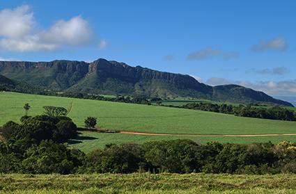

Chapada dos Veadeiros, em Goiás, em 2018. É possível identificar três planos
da paisagem: primeiro plano (vegetação rasteira); segundo plano (vegetação
de arbustos) e terceiro plano (relevo da chapada).
Publicado: 4 de Junho de 2018
Crédito: INAEMIRANDA/PIXABAY

Serra da Canastra, em Minas Gerais, em 2021. É possível identificar três planos da paisagem: primeiro plano (vegetação rasteira e mata); segundo plano (área de lavoura) e terceiro plano (relevo da serra).
Publicado: 14 de Dezembro de 2021 Crédito: SERGIO MELLO/PIXABAY
Na paisagem localizada na Áustria, em 2018, é possível identificar três planos da paisagem: primeiro plano (vegetação de gramíneas); segundo plano (vegetação mais densa sobre o relevo elevado) e terceiro plano (relevo de montanhas).
Publicado: 29 de Agosto de 2018 Crédito: BRUNO/GERMANY/PIXABAY
Na paisagem localizada na Áustria, em 2021, é possível identificar três planos da paisagem: primeiro plano (área coberta com água); segundo plano (área com construções e vegetação) e terceiro plano (relevo de montanhas).
Publicado: 14 de Setembro de 2021 Crédito: FRANZ BACHINGER/PIXABAY